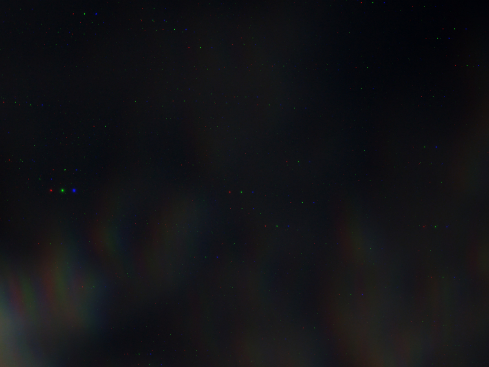

Carl Eder
Stargazer of Polaris
Description: Between the vast space and the speck of earth lies a stargazer of Polaris. He watches and becomes lost, all the while finding his true self, his real identity. Darkness sinks him deeper into the unending need to vividly witness the breath of the One, who, in time, will lift him up in the abyss and uncover the skin that hides within.
Constellations
Astronomy
| Constellation Group |
Description |
Rating |
| 101-word Stories |
Restricted narratives that allow for a plethora of creative expressions |
⭐ ⭐ ⭐ ⭐ ⭐ |
| Filipino Poems |
Literary lines that pay tribute to my roots |
⭐ ⭐ ⭐ ⭐ |
| Color Poems |
Collection of musings about shades and hues and what they represent |
⭐ ⭐ ⭐ ⭐ ⭐ |
Other Celestial Bodies
| Tense |
⭐️⭐️⭐️⭐️⭐️ |
| Ikot |
⭐️⭐️⭐️⭐️⭐️ |
|
| Undeserved |
⭐️⭐️⭐️⭐️⭐️ |
| Amy |
⭐️⭐️⭐️⭐️⭐️ |
|
Gazing Activities
- Search for Ursa Minor within the vast darkness.
- Trace the constellation slowly, making sure that the lines connecting the stars are written with utmost care.
- Put the final dot at Polaris.
Stargazer Info
- Click here to see further info